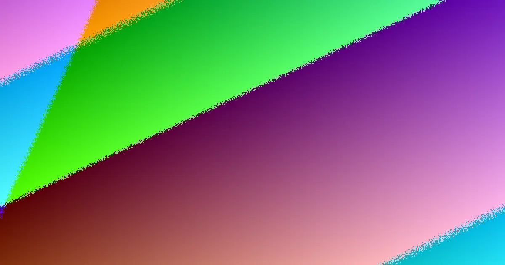

Best Website Creation offers free, conversion-focused web design for Australian businesses. To approve a build, request a written scope detailing pages, functions, content responsibilities, and launch tasks. Verify the proposed site structure aligns with your desired customer actions, using W3C standards and ACCC guidance as benchmarks.
For local buyers, web design australia quotes explained This guide helps you scrutinise web design proposals, especially those with headline offers.
Web Design Australia Quotes Explained Explained
When a web design provider in Australia advertises a free offer, it's crucial to understand what work is included. This headline can be attractive, but without a clear breakdown, it might not cover all necessary aspects of a functional website. Similarly, a 'conversion-focused' design needs a practical explanation of how it will achieve specific business goals, such as generating enquiries, bookings, or sales.
To move beyond attractive marketing language, ask for a plain-language explanation of the user journey. This involves detailing the sequence of actions a visitor will take on the site, from landing on the homepage to completing a desired action. The proposed site structure, including page order, contact forms, and calls to action, should directly support these commercial objectives. If the provider's explanation remains abstract, the conversion claim has not yet been translated into concrete, approvable work.
The Importance of a Written Scope and Deliverables
The most reliable basis for comparing web design proposals is not a visual mock-up, but a detailed written scope. This document should clearly outline what is included in the service, what constitutes an extra cost, and what responsibilities lie with the client. For website projects, this typically includes a list of pages, specific functions to be implemented, how revisions will be handled, content entry processes, contact form setup, and launch tasks.
The Australian Competition and Consumer Commission (ACCC) provides guidance on ensuring service descriptions are clear and unambiguous. If one proposal is significantly less detailed than another, prompt the provider to expand its wording. Clarity at this stage is vital for preventing disputes later, as it ensures that approval is based on documented deliverables rather than assumptions made during sales conversations. A comprehensive quote allows you to accurately assess the value and scope of the work before committing.
Verifying Site Structure and Behaviour with W3C Standards
The World Wide Web Consortium (W3C) develops web standards that are essential for ensuring a website's structure and behaviour are consistent across different devices and browsers. While you don't need to inspect the code yourself, it's important that the provider can explain how elements like navigation, headings, forms, and page sections will function with final content in place.
This discussion often highlights the difference between a polished preview and a truly workable site. A static layout might look complete, but unresolved decisions about menu depth, button labels, form placement, or how large blocks of text affect mobile screens can emerge late in the process. These details should be tested and agreed upon before final approval. Key questions include how navigation will be finalised, how mobile layouts will be reviewed with actual text and images, and who will test the primary enquiry or booking path before sign-off.
Who This Guide Is For and Next Steps
This guide is intended for business owners, operators, or marketing leads who are comparing new website builds or significant rebuilds. It provides a framework for evaluating proposals beyond mere visual appeal, particularly when headline offers focus on free services or conversion outcomes.
The most critical next step after reviewing a proposal is to request a short, written scope. This document should clearly name the pages to be included, the functions that are part of the core offer, the content required from your business, the agreed method for revisions, and the specific launch tasks. Without this detailed scope, approving a proposal is premature, as the core promise has not yet been tied to defined, actionable work. Pinning down the offer in writing ensures alignment and clarity for the entire project.
- Define the Primary Customer Action. Clearly state the main goal of your website: enquiries, direct sales, bookings, or information gathering.
- Request a Written Scope of Work. Ask for a detailed document listing all included pages, functions, content responsibilities, and launch tasks.
- Clarify 'Free Offer' Inclusions. Understand precisely what work is covered by any advertised free web design offer and what is considered an additional cost.
- Verify Conversion Strategy. Ensure the provider explains how the site structure, content, and calls to action will support your defined customer action.
- Confirm Technical Standards. Ask how the site's structure and behaviour will be tested across devices and with final content, referencing W3C standards.
Common questions
What should I look for in a web design quote? A reliable quote includes a detailed list of pages, specific functions, content responsibilities, revision processes, and launch tasks. It should clearly distinguish between included services and extras.
How do I verify a 'conversion-focused' design claim? Ask the provider to explain the user journey in plain language, detailing how the site's structure, content, and calls to action will guide visitors towards your desired business outcome, such as making an enquiry or a purchase.
Why is a written scope more important than a visual mock-up? A written scope defines the actual deliverables and responsibilities, preventing misunderstandings and disputes. A mock-up is a visual representation, but the scope details the functional and structural components that determine the site's effectiveness.
This guide helps Australian businesses verify web design proposals by focusing on written scopes, conversion strategies, and technical standards.